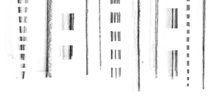

Texture
Texture or pattern is a complex visual variable, combining size, brightness, color, shape and orientation. Defined narrowly, texture or spacing refers to the spatial frequency of components of a pattern. It is used for nominal and ordered attributes of areas and lines. Texture has an almost unlimited length and can be used effectively to denote the style and thickness of shape borders and the lines of links.

| Texture capacity = 2 - 5
The capacity of a visual variable is defined as the number of different perceptible steps by human mind. The number of used values on the visual notation do not should be greater than to the visual variable capacity. |
Texture is:
| Selective
Is a change in this variable enough to allow us to select it from a group? |
| Associative
Is a change in this variable enough to allow us to perceive them as a group? |
| Lenght
Across how many changes in this variable are distinctions perceptible? |